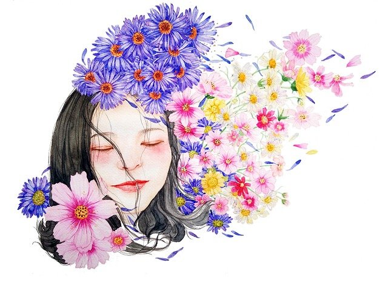

# Yuna lebt
⯈ [Start](index.html)
⯈ [Blog](blog/)
---
Mein Name ist Yuna. Zumindest seit dem 3. Juli 2022. Da fasste ich meinen Mut zusammen und habe mich meiner Ehefrau gegenüber als trans* geoutet. So viele Jahre lang habe ich verdrängt, heruntergeschluckt und weggeschoben, wer ich wirklich bin. Ich wollte die Wahrheit über mich nicht wahrhaben.
Jetzt ist eine neue Zeit.
Ich möchte meinen Weg dokumentieren. Ein Weg, bei dem ich selber das Ziel nicht kenne. Ich begebe mich einfach auf die Reise und schaue, wo ich lang gehen werde. »Der Weg ist das Ziel« und: »Jede Reise beginnt mit einem ersten Schritt«.
